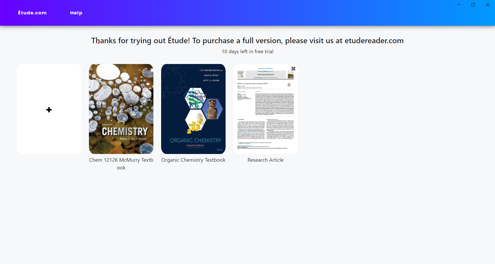
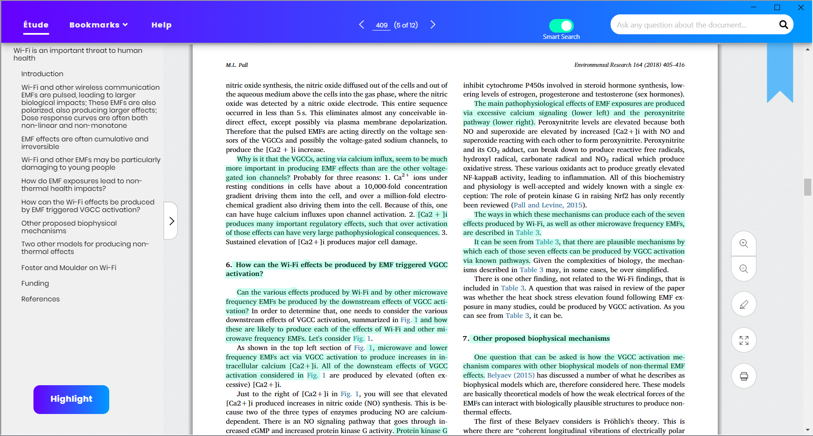

Welcome to Étude! Here are some quick instructions to get you started with using Étude to its fullest potential.
Library Page

This is the Library page. If you want to add a PDF, simply click the plus sign and it will take you to your file finder. Then, select the PDF you wish to upload. Once loaded, you can access your PDF simply by clicking on it.
Main Reading Page

This is the reading page! From here, you can scroll through the PDF and read as you would with any normal PDF viewer like Adobe. The black toolbar at the top of the page provides you with a host of functionalities. When you’re done, simply press the library button to go back!
Bookmark
To bookmark the page, you can click this button. It will save the page and put it into your bookmarks page. To access them, click the bookmarks button at the top of the page.
Summarize
In order to summarize a section of the PDF, click this button. A pop-up will then come up where you can specify what pages you want to be summarized. For example, if you want pages 10 to 16 summarized, enter 10 as the starting page and 16 as the ending page. Etude will then popup with the summary!
Smart Search
Looking for specific information within the document? Type your questions or keywords into the search bar on the top right of the screen. Etude will then display what parts of the document best answer or match your questions. Simply click on one of the answers and it will take you to that portion of the file!
For more information, contact us at:
Email: contact@jadetechnologiesllc.com Phone Number: 336-529-0307 Etude is a copyrighted product of Jade Technologies LLC.